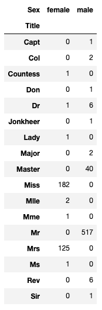

[Kaggle] titanic 데이터 가공
데이터 가공
앞서 데이터 세트와 요구사항에 대해서 몇 가지 가정을 확인헀다. 지금까지 데이터의 패턴을 파악하기 위해서 차트를 만들었지만 데이터를 변경할 필요는 없었다. 이제는 일반 데이터에서 보이지 않는 패턴을 확인하고 모델에 사용하기 위해서 데이터를 가공해본다.
Correcting by dropping features
불필요한 특성을 제거함으로 데이터 포인트 수를 줄일 수 있다. 모델의 속도를 높이고 데이터 분석을 용이하게 한다. 우리는 우리의 가정과 결정에 근거하여 Carbin(호실 번호 - 빈 데이터가 많음) Ticket (티켓 번호 - 사용자를 구분하는 유일값) 데이터를 제거한다.
- 학습 데이터와 테스트 데이터 모든 곳에서 같은 작업을 해 일관성을 유지해야 합니다.
train_df = train_df.drop(['Ticket', 'Cabin'], axis=1)
test_df = test_df.drop(['Ticket', 'Cabin'], axis=1)
Creating new feature extracting from existing
이름 특성을 제거하기 전에 이름 특성에서 타이틀을 뽑아 타이틀 특성을 만들 수 있다. 타이틀로 생존 여부를 확인할 때 다음 부분을 주목해야 한다.
- 타이틀은 특정 나이대를 대표하는 경우가 많다. 예를 들어 master 타이틀을 가진 사람들의 평균 연령은 5세 이다.
- 생존율은 타이틀 나이대마다 차이가 있다.
- 대부분이 죽거나 사는 특정 타이틀들이 있다.
for dataset in combine:
dataset['Title'] = dataset.Name.str.extract(' ([A-Za-z]+)\.', expand=False)
pd.crosstab(train_df['Title'], train_df['Sex'])
타이틀 특성과 성별의 상관 관계 - 특정 타이틀은 특정 성별을 대표한다.

for dataset in combine:
dataset['Title'] = dataset['Title'].replace(['Lady', 'Countess','Capt', 'Col',\
'Don', 'Dr', 'Major', 'Rev', 'Sir', 'Jonkheer', 'Dona'], 'Rare')
dataset['Title'] = dataset['Title'].replace('Mlle', 'Miss')
dataset['Title'] = dataset['Title'].replace('Ms', 'Miss')
dataset['Title'] = dataset['Title'].replace('Mme', 'Mrs')
train_df[['Title', 'Survived']].groupby(['Title'], as_index=False).mean()
같은 의미를 가진 타이틀은 함치고 타이틀별 생존율을 비교한다. Mrs, Miss는 높은 생존율 보여준다.

title_mapping = {"Mr": 1, "Miss": 2, "Mrs": 3, "Master": 4, "Rare": 5}
for dataset in combine:
dataset['Title'] = dataset['Title'].map(title_mapping)
dataset['Title'] = dataset['Title'].fillna(0)
train_df.head()
이제 이 특정 타이틀들을 가중치르를 적용 시킬 수 있도록 숫자값으로 매핑한다.

Name 특성과 PassengerId 특성을 다 사용했으니 제거해준다.
train_df = train_df.drop(['Name', 'PassengerId'], axis=1)
test_df = test_df.drop(['Name'], axis=1)
combine = [train_df, test_df]
train_df.shape, test_df.shape
Converting a categorical feature
이제 문자열이 포함된 특성을 숫자 값으로 변환할 수 있다. 이것은 대부분의 알고리즘 모델에 필요하다.
먼저 성별을 여성 = 1, 남성 = 0이라는 숫자로 변경해본다.
for dataset in combine:
dataset['Sex'] = dataset['Sex'].map( {'female': 1, 'male': 0} ).astype(int)
train_df.head()

Completing a numerical continuous feature
이제 null 값을 가진 특성을 추정 및 완료(보완)해야 한다.
- 가장 간단한 방법은 평균과 표준 사이의 랜덤 값을 생성해 채워 넣는 것이다.
- 더 정확한 방법은 다른 상관 특성을 사용해 추측하는 것이다. 우리는 나이, 성별, 그리고 pClass 사이의 상관 관계를 주목한다. pclass와 성별을 조합하면 평균 적인 나이를 추측할 수 있다.
- 방법 1과 2를 결합한다. 무작위 값을 추측하는 대신에 pclass와 성별을 조합한 합성 특성에 기반해 평균과 표준 편차 사이의 무작위 숫자를 사용할 수 있다.
# grid = sns.FacetGrid(train_df, col='Pclass', hue='Gender')
grid = sns.FacetGrid(train_df, row='Pclass', col='Sex', size=2.2, aspect=1.6)
grid.map(plt.hist, 'Age', alpha=.5, bins=20)
grid.add_legend()

먼저 위의 6가지 경우에 대한 추측값을 정할 수 있도록 빈 배열을 준비한다.
guess_ages = np.zeros((2,3))
guess_ages
====
array([[0., 0., 0.],
[0., 0., 0.]])
이제 우리는 성별(0 또는 1)과 P클래스(1, 2, 3)에 대해 반복하여 6가지 조합에 대한 연령의 추측 값을 계산한다.
for dataset in combine:
for i in range(0, 2):
for j in range(0, 3):
guess_df = dataset[(dataset['Sex'] == i) & \
(dataset['Pclass'] == j+1)]['Age'].dropna()
# age_mean = guess_df.mean()
# age_std = guess_df.std()
# age_guess = rnd.uniform(age_mean - age_std, age_mean + age_std)
age_guess = guess_df.median()
# Convert random age float to nearest .5 age
guess_ages[i,j] = int( age_guess/0.5 + 0.5 ) * 0.5
for i in range(0, 2):
for j in range(0, 3):
dataset.loc[ (dataset.Age.isnull())
& (dataset.Sex == i)
& (dataset.Pclass == j+1),\
'Age'] = guess_ages[i,j]
dataset['Age'] = dataset['Age'].astype(int)
train_df.head()

나이대(age band) 특성을 만들고 생존율과 상관 관계를 추측한다.
train_df['AgeBand'] = pd.cut(train_df['Age'], 5)
train_df[['AgeBand', 'Survived']].groupby(['AgeBand'], as_index=False)
.mean()
.sort_values(by='AgeBand', ascending=True)

이제 band가 표시되는 튜플 형태인 데이터를 수정해 순차적 데이터로 만든다.
for dataset in combine:
dataset.loc[ dataset['Age'] <= 16, 'Age'] = 0
dataset.loc[(dataset['Age'] > 16) & (dataset['Age'] <= 32), 'Age'] = 1
dataset.loc[(dataset['Age'] > 32) & (dataset['Age'] <= 48), 'Age'] = 2
dataset.loc[(dataset['Age'] > 48) & (dataset['Age'] <= 64), 'Age'] = 3
dataset.loc[ dataset['Age'] > 64, 'Age']
train_df.head()

age값을 수정했으니 age band 특성은 이제 제거해준다.
train_df = train_df.drop(['AgeBand'], axis=1)
combine = [train_df, test_df]
train_df.head()
Create new feature combining existing features
우리는 Parch 특성과 SibSp 특성을 합쳐 FamilySize 특성을 만들 수 있다.
for dataset in combine:
dataset['FamilySize'] = dataset['SibSp'] + dataset['Parch'] + 1
train_df[['FamilySize', 'Survived']].groupby(['FamilySize'], as_index=False)
.mean()
.sort_values(by='Survived', ascending=False)

그리고 가족이 없는 사람은 따로 가중치를 적용할 수 있도록 isAlone 이라는 특성을 만든다.
for dataset in combine:
dataset['IsAlone'] = 0
dataset.loc[dataset['FamilySize'] == 1, 'IsAlone'] = 1
train_df[['IsAlone', 'Survived']].groupby(['IsAlone'], as_index=False).mean()

그리고 다시 Parch, SibSp 특성을 제거한다.
train_df = train_df.drop(['Parch', 'SibSp', 'FamilySize'], axis=1)
test_df = test_df.drop(['Parch', 'SibSp', 'FamilySize'], axis=1)
combine = [train_df, test_df]
train_df.head()

이제 pclass 와 나이를 합친 혼합 특성을 만들 수 있다.
for dataset in combine:
dataset['Age*Class'] = dataset.Age * dataset.Pclass
train_df.loc[:, ['Age*Class', 'Age', 'Pclass']].head(10)

Completing a categorical feature
Embarked 특성은 S, Q, C 의 데이터를 가진 범주형 특성이다. 그리고 Embarked 특성은 빈 데이터가 상당히 많은데, 가장 많이 발견되는 데이터인 S로 채운다.
freq_port = train_df.Embarked.dropna().mode()[0]
freq_port
======
'S'
for dataset in combine:
dataset['Embarked'] = dataset['Embarked'].fillna(freq_port)
train_df[['Embarked', 'Survived']].groupby(['Embarked'], as_index=False)
.mean()
.sort_values(by='Survived', ascending=False)

Converting categorical feature to numeric
Embarked 특성이 이제 빈 자리가 없으니 다시 숫자형 데이터로 바꿔주자.
for dataset in combine:
dataset['Embarked'] = dataset['Embarked'].map( {'S': 0, 'C': 1, 'Q': 2} ).astype(int)
train_df.head()

Quick completing and converting a numeric feature
우리는 이제 누락이 많은 Fare 퀄럼 데이터에 대해서 값을 채워넣을 수 있다.
test_df['Fare'].fillna(test_df['Fare'].dropna().median(), inplace=True)
test_df.head()

이제 이 Fare 데이터를 다시 범위형 데이터로 변경한다.
train_df['FareBand'] = pd.qcut(train_df['Fare'], 4)
train_df[['FareBand', 'Survived']].groupby(['FareBand'], as_index=False)
.mean()
.sort_values(by='FareBand', ascending=True)

그리고 그 범위형 데이터를 순서형 데이터로 다시 변경하고 이제 범위형 데이터 퀄럼을 제거한다.
for dataset in combine:
dataset.loc[ dataset['Fare'] <= 7.91, 'Fare'] = 0
dataset.loc[(dataset['Fare'] > 7.91) & (dataset['Fare'] <= 14.454), 'Fare'] = 1
dataset.loc[(dataset['Fare'] > 14.454) & (dataset['Fare'] <= 31), 'Fare'] = 2
dataset.loc[ dataset['Fare'] > 31, 'Fare'] = 3
dataset['Fare'] = dataset['Fare'].astype(int)
train_df = train_df.drop(['FareBand'], axis=1)
combine = [train_df, test_df]
train_df.head(10)